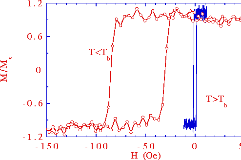

Figure 1: Hysteresis loops of the same
polycrystalline NiO500Å/NiFe100Å bilayer film are
shown, one at a temperature below the blocking temperature, T
b, of NiO and one above T b. Above T
b, the NiFe behaves as a free layer, magnetically
the same as a NiFe layer deposited on a non-magnetic
substrate. Below T b the interfacial exchange
interaction induces a unidirectional anisotropy which shifts
the NiFe loop away from the zero field axis and raises its
coercivity.